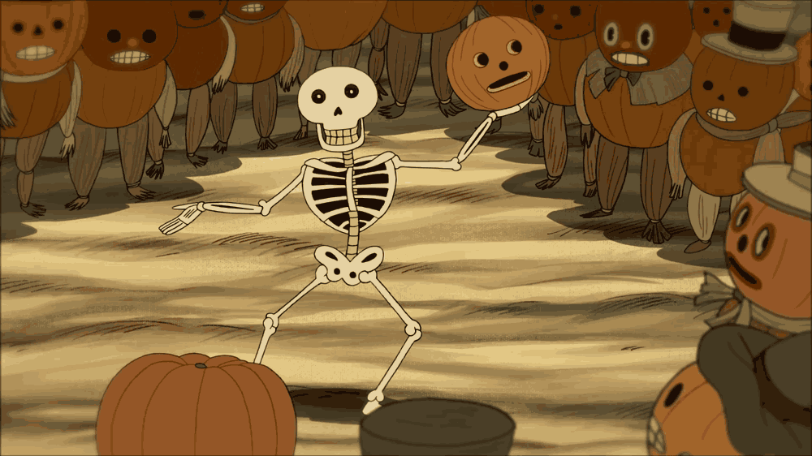

A série foca nos irmãos, Wirt e Greg (dublados por Elijah Wood e Collin Dean respectivamente), que se veem no Desconhecido, uma estranha floresta.[3][4] Para encontrar o caminho de casa, eles viajam por toda a floresta e pelas cidades que passam, com a ajuda do sábio velho Woodsman (Lenhador[3] ou O Senhor da Mata[4]) (dublado por Christopher Lloyd), e Beatrice (Beatrice[3][4]) (dublada por Melanie Lynskey), a pássara azul que os acompanha para desfazer a maldição que afetou toda a sua família.
Wirt, o mais velho, sempre brigando com o irmão, sem muita iniciativa, mas objetivos. Wirt curte tocar clarinete, poesias e arquitetura, mas guardando como segredo por medo de ser o ridículo. Por outro lado, Greg, o mais novo, é espontâneo, sempre brincando e um sem noção adorável. Greg no caminho carrega consigo um sapo (dublado por Jack Jones), cujo nome não está definido e que apenas se comunicou ao cantar. Beatrice, uma pássara aparentemente ignorante mas bondosa. A pássara azul costuma depreciar Wirt e sempre parecendo séria, mesmo quando irônica. Senhor da Mata, um homem com medo de perder o que já perdeu. Que processa de óleo escuro das árvores do lugar, diariamente alimentando seu lampião. O Monstro, ou Fera, ou Beast [4]) (dublado por Samuel Ramey), é uma misteriosa criatura que não se sabe exatamente a aparência, segundo o Senhor da Mata, ele leva das almas perdidas.
o final. A resolução é feita, onde se soube que o Monstro/a Fera é na verdade uma antiga criatura que leva de almas perdidas até desistirem e de alguma forma se transformarem em "Árvores de Edelwood". Nos dois episódios finais, é revelado que Wirt e Greg são na verdade dois meninos da era contemporânea. A aparência estranha de Wirt e Greg decorre do fato de que foi na noite do Dia das bruxas em que foram transportados para O Desconhecido. Wirt, tenta levar de volta uma fita escrita com poesia embaraçosa que ele fez para uma garota que gosta, que tinha seguido para uma reunião de colegas e amigos no cemitério, onde é atrapalhado por um agente policial, onde Greg pula sobre os muros do jardim do cemitério. Depois que desembarcaram nos trilhos de trem, Greg quase é atravessado por um trem. Wirt o empurrou e foram a uma colina em um lago na tentativa de salvá-lo, mas ficaram inconscientes.